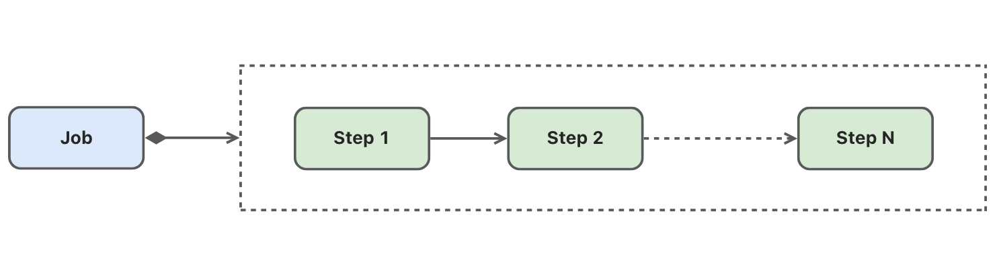
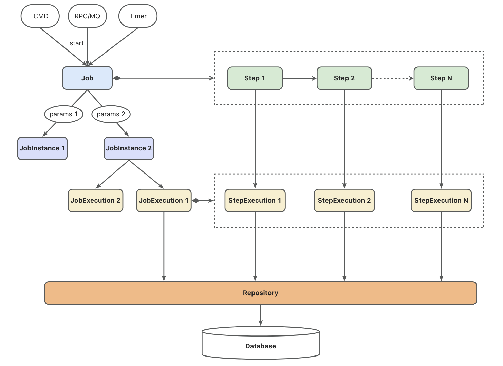
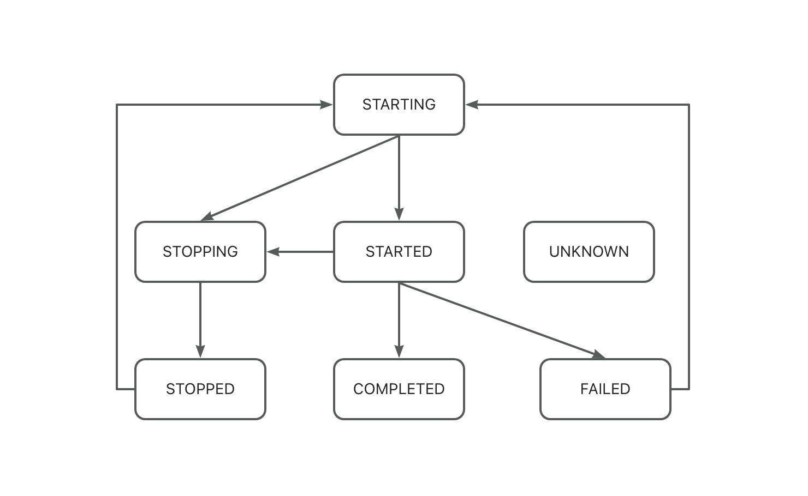

任务介绍
任务（Job）是一个参数化的、可多次执行的批处理作业单元。一个任务由多个步骤（Step）构成。任务执行时会依次执行其中的各个步骤。
结构
任务的静态结构如下： 
任务可以由多种方式触发执行，如命令行、RPC请求、MQ消息或定时器，任务在执行时可以接受参数（典型的参数如日期），不同的参数对应不同的任务实例。一个任务实例可能会被执行多次，每次执行会产生一条执行记录，执行记录中包含任务的启动、结束时间、任务的运行状态或结果。同样地，任务中的每个步骤在每次执行时，也会产生一条步骤的执行记录，且与任务执行记录关联。 任务实例以及任务和步骤的执行记录会持久化到数据库中。 
参数
任务可以接受不同的参数，在运行时，根据输入的参数执行相应的业务逻辑。典型的任务参数示例是日期，例如，在金融账务处理中，日终批处理任务根据不同的日期参数执行相应日期的账务处理。
任务的参数被其中的所有步骤所共享，即每个步骤都可以获取任务参数并根据参数执行相应的业务逻辑。
在gobatch中启动任务时，需要以json串的形式提供任务参数。
状态
任务和步骤的执行记录中维护其运行状态或结果，状态说明如下：
- STARTING：表示任务或步骤正在启动
- STARTED：表示任务或步骤已启动，正在运行中
- STOPPING：表示任务或步骤收到停止指令
- STOPPED：表示任务或步骤已停止运行
- COMPLETED：表示任务或步骤已成功执行
- FAILED：表示任务或步骤执行失败
- UNKNOWN：表示任务或步骤状态未知

监听器
// JobListener defines callbacks for job lifecycle events
type JobListener interface {
// BeforeJob is called before a job execution starts
BeforeJob(execution *JobExecution) BatchError
// AfterJob is called after a job execution completes, regardless of success or failure
AfterJob(execution *JobExecution) BatchError
}
操作
启动任务
有两种任务启动模式：
- 同步执行：启动任务并阻塞，直到任务执行完成或失败才返回
- 异步执行：启动任务并立即返回，任务将在单独的协程中异步执行
// 同步启动任务
// 参数params为json串
gobatch.Start(ctx context.Context, jobName string, params string)
// 异步启动任务
// 参数params为json串
gobatch.StartAsync(ctx context.Context, jobName string, params string)
停止任务
// 停止正在执行的任务
// 参数jobId可以传入两种参数值：
// 1. jobName - 根据jobName找到最近执行的任务实例的最后一次执行记录，如果状态为STARTING或STARTED，则停止。
// 2. jobExecutionId - 根据jobExecutionId找到任务执行记录并停止，如果任务已停止，则不会报错。
gobatch.Stop(ctx context.Context, jobId interface{}) error
重新执行
// 重新启动已停止或失败的任务
// 参数jobId可以传入两种参数值：
// 1. jobName - 根据jobName找到最近执行的任务实例的最后一次执行记录，如果状态为STOPPED或FAILED，则重新启动。
// 2. jobExecutionId - 根据jobExecutionId找到任务实例，并找到最后一次执行记录，如果状态为STOPPED或FAILED，则重新启动。
gobatch.Restart(ctx context.Context, jobId interface{}) error